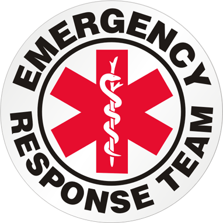

Quick Bio
Robert Breutzmann is a creative developer, passionate about building digital programs and full stack solutions. In his current job, he works to improve quality control by parsing through reporting mechanisms to filter out noise and highlight pertinent information, making it easier to spot relevant data. In his community, he is active as a youth coach for both Flag Football and Baseball, volunteers to help at Basketball events and to help the local Parks and Recreation Department with building projects as well as local events, such as the annual Easter Carnival, and backend support with creating spreadsheets and data tracking devices.

In his community, he spends time coaching his son's Flag Football team and Baseball Team. Coaching for youth sports not only allows him to import his knowledge of Football and Baseball to a new generation of players, but allows the teaching of valuable life skills such as teamwork, conflict resolution, the value of hard word, and how to win and lose gracefully to youth in the community. It also serves as a constructive use of energy for youth, giving them something to look forward to and strive to achieve goals, both personal and team goals. What gives him the most joy is when players go out of their way to lift up and help their teammates.
Coaching Youth Sports requires being able redirect negative behaviors, reshape losses as learning opportunities, keep a positive attitude, and shape "boring" learning drills as fun activities.
At Target Distribution, Robert has been on the Emergency Response Team (ERT) for over 7 years. Aside from being trained by the American Red Cross in First Aid, CPR, and AED use, this team is overseen by an on-site Registered Nurse and is trained and ready to provide aid in a variety of situations that could arise inside a warehouse with many moving parts and Powered Industrial Trucks (PIT). Primarily, ERT evaluates and assesses whether ot not advanced care is required, including activating the Code Green Emergency Response System, calling all ERT members immediately to the scene and having security shut down production and call for an ambulance. Secondary tasks involve informing team members of good practices such as proper hydration, laying clothing (so layers can be removed when warm), and preventative steps for other typical warehouse related injuries and sickness.
Members of ERT require discretion as they are required to abide by HIPPA, keeping any information give by patients confidential, even from managers. They also need to be able to stay calm in high pressure situations and keep patients calm by not showing nervousness or worry while treating potentially life threatening injuries. They must also follow directions and document any encounter to the ERT leader (the on-site nurse) for evaluation and follow up and take suggestions for improvement in stride.
